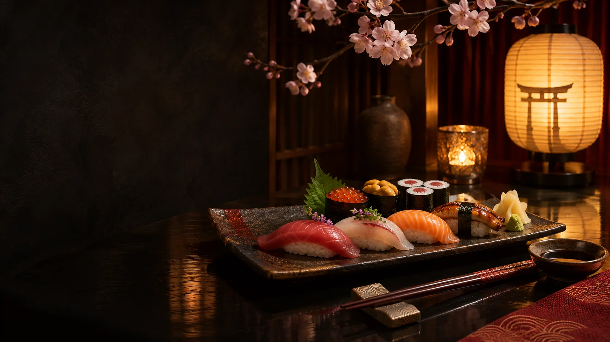
注文
ВАШ ВЫБОР
Корзина
Ваш заказ
Проверьте блюда, способ получения и итог. Демо не списывает оплату и не передаёт заказ ресторану.
Учебная концепция · все бизнес-данные вымышленыTokyo Premium · учебная версия
Ваш заказ
Корзина пуста. Выберите блюдо в меню.
Для полного вечера
Добавьте к заказу
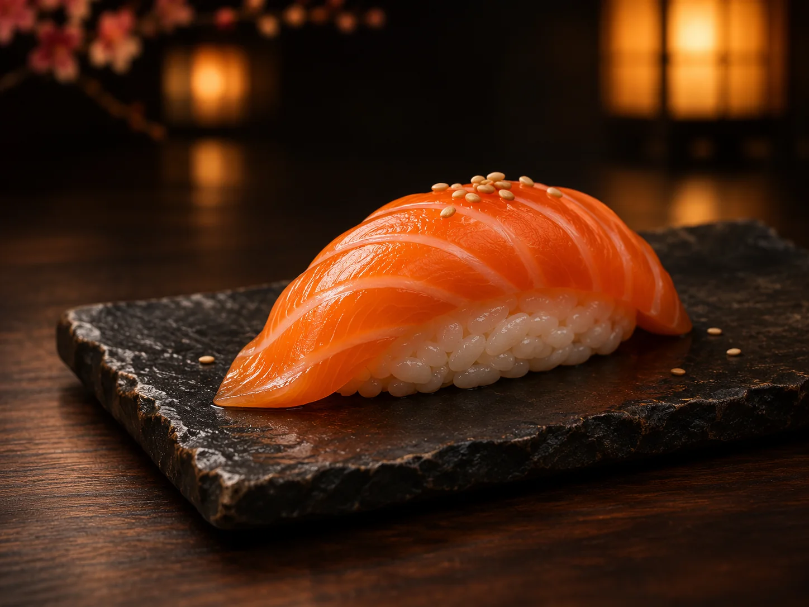

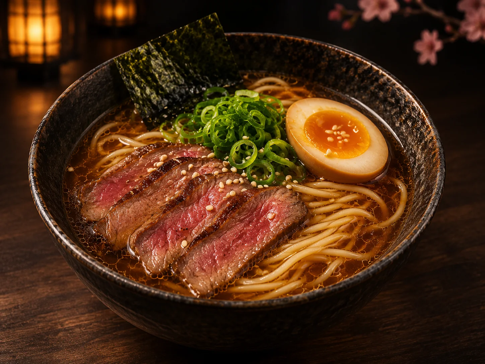
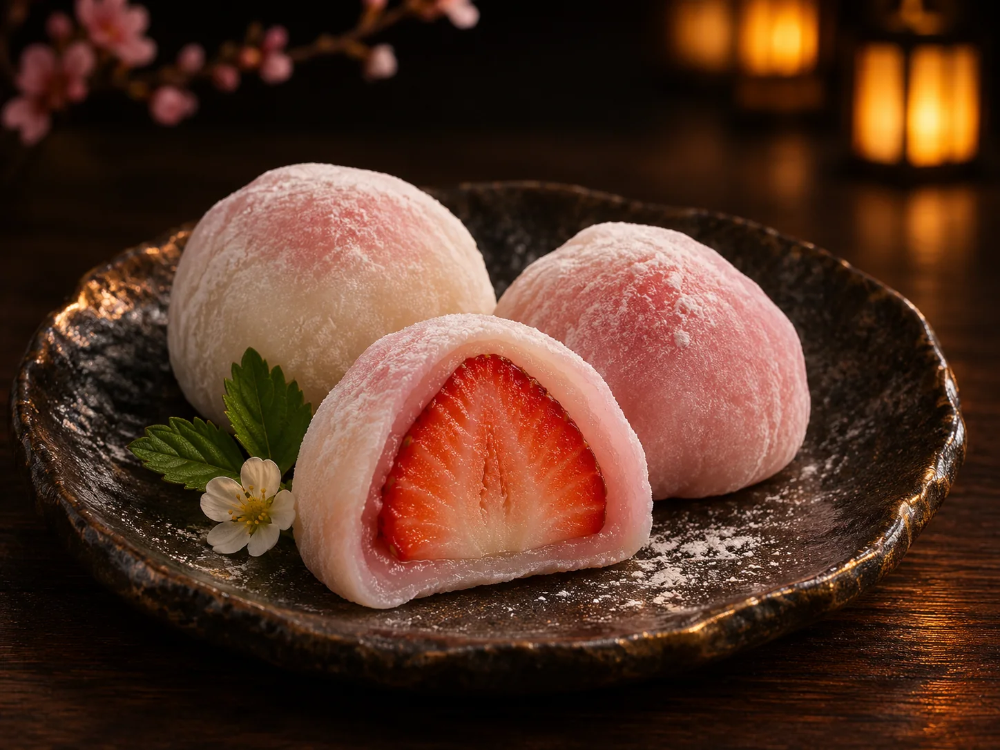
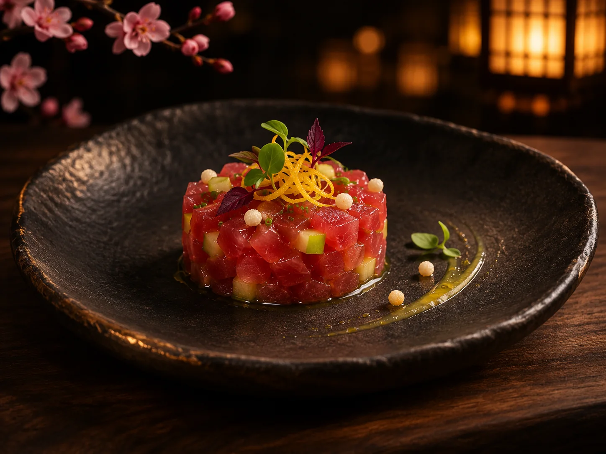
Закуски · 140 г
Тартар из тунца с юдзу
Тунец ахи, понзу с юдзу, зелёное яблоко и хрустящий рис — прохладная закуска с чистым цитрусовым финалом.
4 900 ₸
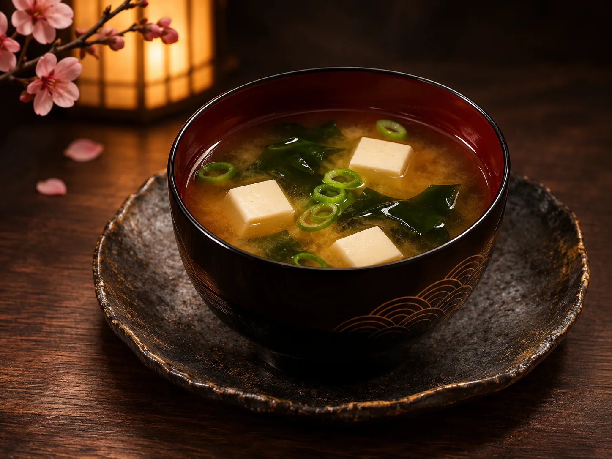
Супы · 300 мл
Мисо-суп с вакаме
Светлый бульон даси, паста сира-мисо, тофу, вакаме и зелёный лук.
2 400 ₸
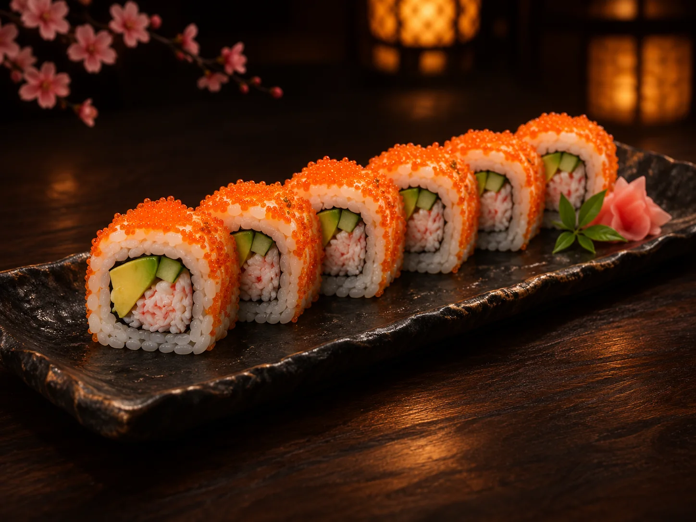


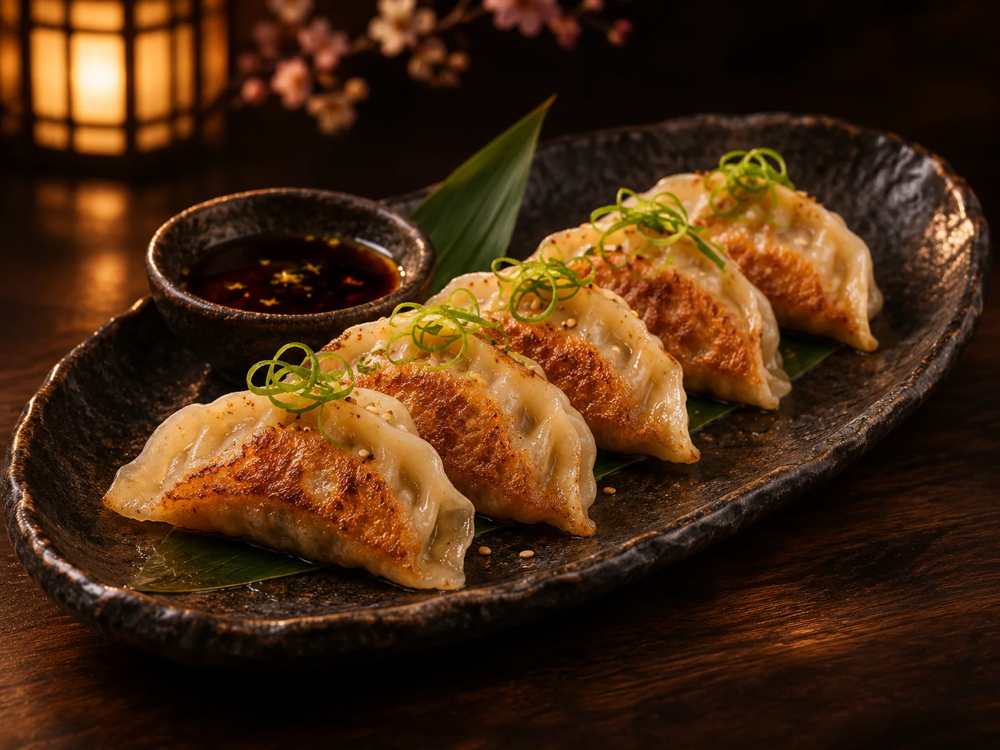
Закуски · 6 шт.
Гёдза с уткой
Тонкое тесто, томлёная утка, имбирь и кунжутное масло. Подаём с соусом понзу собственного состава.
4 600 ₸

Десерты · 170 г
Матча-тирамису
Крем маскарпоне, савоярди с ходзича и пудра из церемониальной матчи.
3 600 ₸
Напитки · 300 мл
Юдзу-лимонад
Домашняя цитрусовая основа юдзу, содовая и тонкая нота свежего имбиря.
2 300 ₸


Горячее · 240 г
Эби темпура
Тигровые креветки в лёгком тесте, сезонные овощи и тэнцую с дайконом.
5 600 ₸
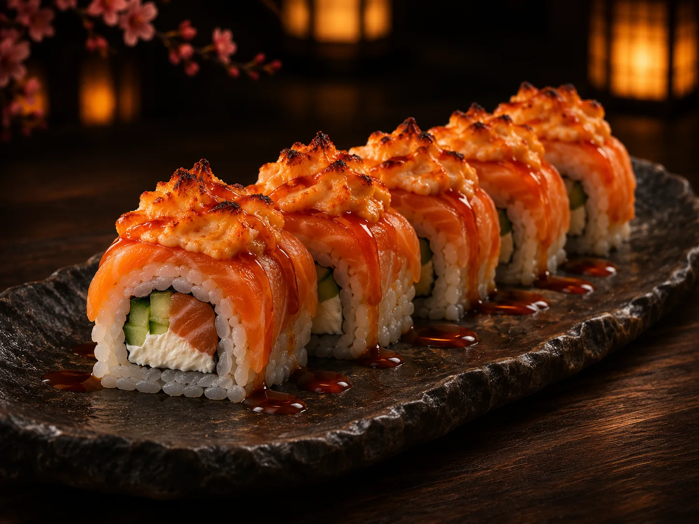
Роллы · 320 г
Запечённый ролл «Вулкан»
Лосось, огурец и сливочный сыр под шапкой из соуса спайси.
5 200 ₸
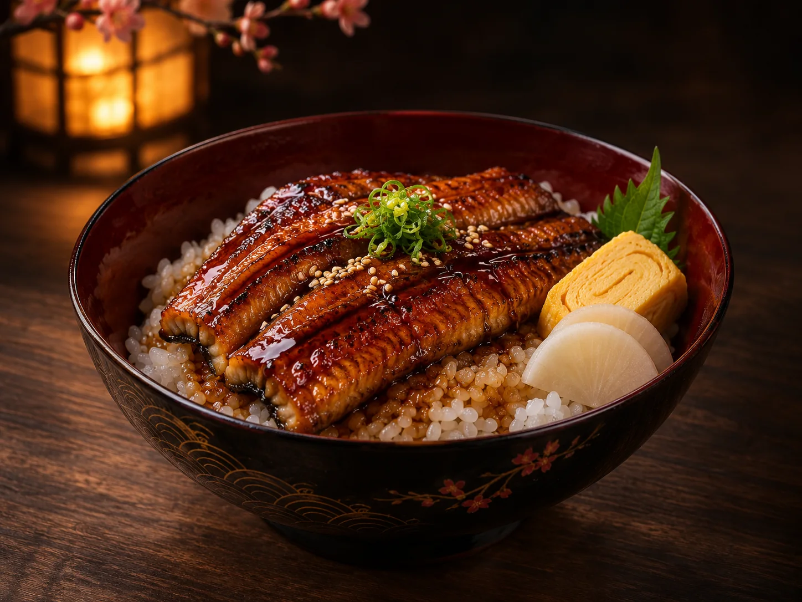
Горячее · 420 г
Донбури с угрём унаги
Рис косихикари, угорь с глазурью кабаяки, тамаго и маринованный дайкон.
6 900 ₸
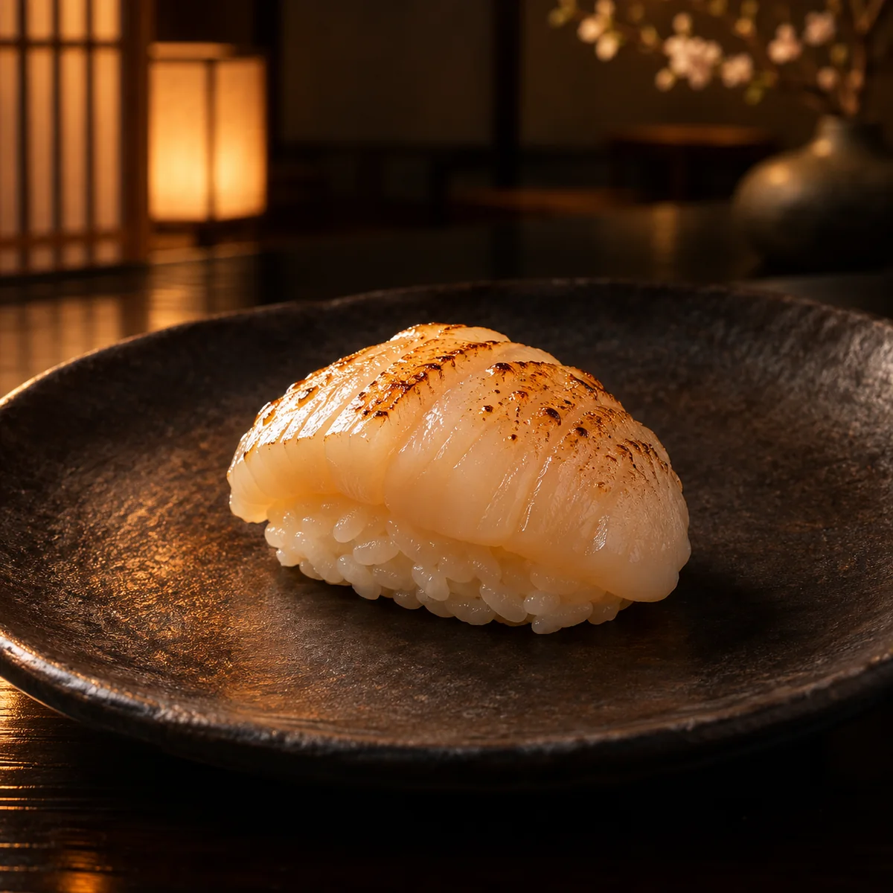
Суши и сашими · 40 г
Нигири с морским гребешком
Сладкий морской гребешок, слегка обожжённый снаружи, на рисе для суши; цитрусовый акцент юдзу.
2 200 ₸
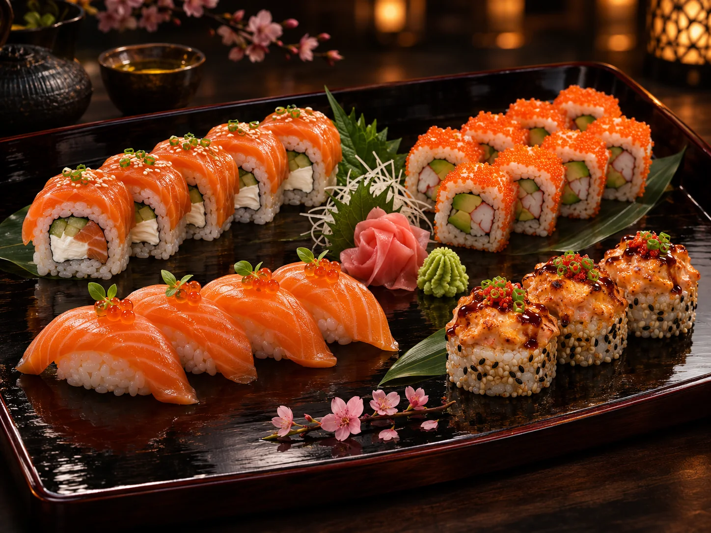
Сеты · 24 шт.
Сет «Токио»
Двадцать четыре кусочка: лосось, тунец, креветка и два фирменных ролла.
17 900 ₸
Напитки · 300 мл
Ходзича латте
Обжаренный японский чай ходзича с молоком и лёгкой карамельной нотой.
2 400 ₸

Сеты · 32 шт.
Сет «Сакура»
Тридцать два кусочка с лососем, угрём и сезонным роллом для компании.
22 900 ₸
Роллы · 300 г
Урамаки с лососем и авокадо
Лосось, авокадо, огурец и рис в лёгком урамаки с кунжутом.
5 100 ₸
Закуски · 150 г
Эдамаме с морской солью
Молодые соевые бобы на пару с морской солью и цедрой лайма.
1 900 ₸
Горячее · 450 г
Удон с говядиной и шиитаке
Удон, тонкие ломтики говядины, шиитаке и бульон на соевом соусе.
5 100 ₸
Сеты · 12 шт.
Nigiri selection
Двенадцать нигири из лосося, тунца, хамачи, креветки и морского гребешка.
15 600 ₸
Десерты · 140 г
Дораяки с кремом матча
Мягкие блинчики дораяки и крем на основе матча с белым шоколадом.
2 900 ₸
Роллы · 280 г
Спайси ролл с тунцом
Тунец, огурец и мягкий спайси-соус; остроту уравновешивают кунжут и рис.
4 900 ₸
Закуски · 5 шт.
Такояки с соусом тонкацу
Пять горячих шариков с осьминогом, имбирём и стружкой бонито.
3 200 ₸
Горячее · 240 г
Курица карааге
Куриное бедро в лёгкой хрустящей панировке, лимон и домашний соус.
3 900 ₸
Суши и сашими · 90 г
Сашими из тунца
Тонко нарезанный тунец с дайконом, васаби и соевым соусом отдельно.
4 400 ₸
Закуски · 220 г
Насу денгаку
Баклажан, запечённый под глазурью мисо, с кунжутом и зелёным луком.
3 300 ₸
Горячее · 380 г
Лосось терияки с рисом
Запечённый лосось под глазурью терияки, рис и маринованный дайкон.
6 500 ₸
Десерты · 120 г
Вараби-моти с кинако
Нежное моти из крахмала вараби, пудра кинако и сироп куромицу.
2 700 ₸
Закуски · 160 г
Салат вакаме с кунжутом
Морские водоросли вакаме, огурец и рисовый уксус с кунжутом.
2 400 ₸
Роллы · 260 г
Зелёный ролл с авокадо
Авокадо, огурец, зелёный лук и кунжут — лёгкая растительная подача.
3 400 ₸
Суши и сашими · 45 г
Гункан с тобико
Хрустящая тобико в оболочке из нори на рисе с деликатной нотой юдзу.
1 900 ₸
Горячее · 280 г
Сезонное ассорти темпура
Креветка и сезонные овощи в тонком кляре с тэнцую и дайконом.
6 200 ₸
Суши и сашими · 50 г
Гункан с острым крабом
Краб, японский майонез и лёгкий спайси-соус в нори.
2 100 ₸

Горячее · 400 г
Оякодон с курицей
Нежная курица и яйцо на рисе косихикари с луком и соусом на основе сои.
4 600 ₸

Напитки · 300 мл
Холодная сенча с юдзу
Зелёный чай сенча, юдзу и лёгкая сладость; подаём охлаждённым.
2 600 ₸